Создание игр в Roblox Studio
Левел-дизайн. Открытые локации
Основы левел-дизайна
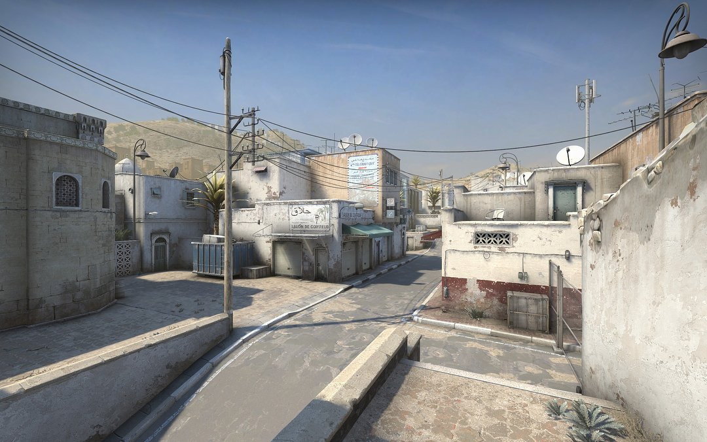Это занятие открывает восьмой модуль курса. Оно расскажет о том, как проектировать открытые локации и собирать их таким образом, чтобы создавать сложные и интересные уровни. В нём мы создадим локацию для шутера в городских условиях. Для этого занятия можно использовать уже существующий уровень из занятия 20, в котором был создан интерфейс и система разделения на команды. Если вы будете использовать этот уровень, удалите из него лабиринт, оставив только пол и два спаунпоинта.
Левел дизайн
Левел дизайн - отдельный процесс в создании игры, цель которого заключается в продумывании и создании концепта будущих локаций с использованием минимального количества средств.
В процессе работы левел-дизайнер создает уровни, основываясь на их цели и значении в игре. Задача левел-дизайнера - придумать и создать такой уровень, в котором игрок будет находиться в неразрывном игровом процессе, не прерываясь из-за излишней сложности и непонимания направления движения, иметь заранее подготовленные для игровых сценариев зоны и легко ориентироваться в пространстве.
Удачный уровень ведёт игрока по продуманным дизайнером маршрутам, помогая игроку легко исследовать локацию и использовать все её возможности по максимуму. В его в дизайне используется множество различных подходов и техник. В этом занятии мы рассмотрим основы, обладание которыми позволит создавать интересные и продуманные локации.
Первый и самый главный этап проектирования уровня - это блокаут (другое название - грейбокс). Блокаут - это прототип уровня, в котором не используются 3D-модели. Вместо них левел-дизайнер использует примитивные геометрические фигуры: кубы, цилиндры и т.д.
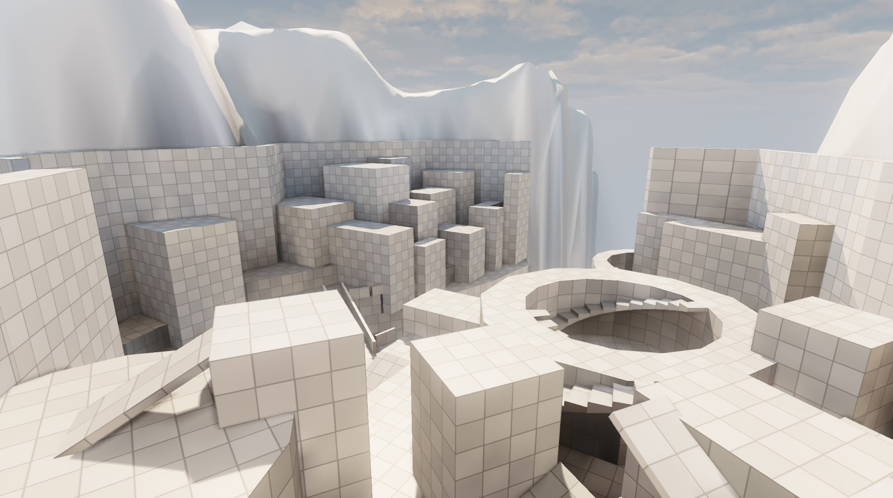Такой подход позволяет сконцентрироваться на игровом процессе, а не на визуальной части игры. На этом этапе важно сделать так, чтобы игроку было комфортно и удобно перемещаться по уровню, а все декоративные детали могут быть добавлены позже. В этом занятии мы будем использовать именно этот подход, чтобы изучить базовые принципы левел-дизайна.
Подготовка пространства
Так как мы будем создавать уровни для шутера, необходимо заранее обозначить правильные габариты локации. В большинстве уровней шутеров есть две базы, на которых появляются игроки. Пространство между этими базами - это поле боя, которое игроки должны использовать различными способами для получения преимущества над командой противника.
Если упростить движение игроков, то их задача - бежать навстречу противнику и добежать до базы врага. Именно поэтому большинство локаций шутеров прямоугольные. Благодаря такой форме можно легко создать три главные зоны уровня: центральная арена и два флага для подкреплений.
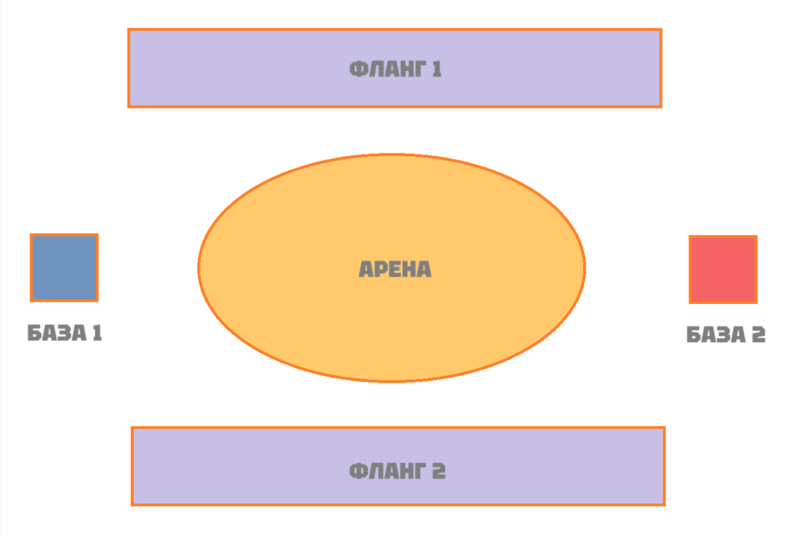Разблокируйте пол карты (Baseplate) с помощью инструмента Lock и измените его пропорции. Расположите базы противников друг напротив друга и запустите игру, чтобы проверить масштабы локации. Попробуйте добежать от одной базы до другой по прямой.
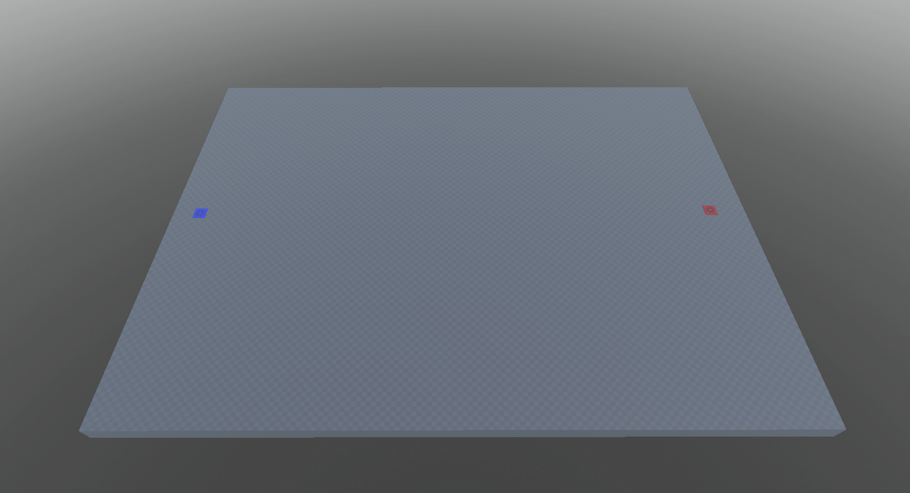В тот момент, когда вы почувствуете усталость от движения, вы найдёте ориентировочную оптимальную длину локации. Запомните это место и ограничьте длину уровня так, чтобы базы команд находились на удобной дистанции друг от друга.
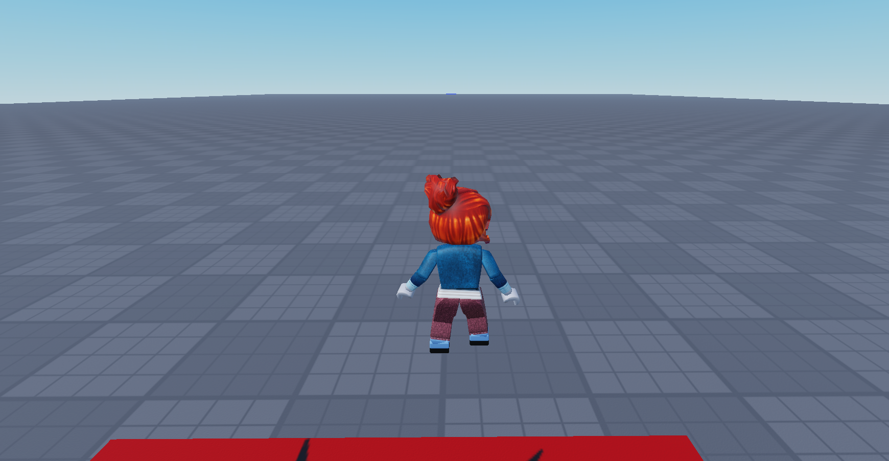После изменения длины уровня отрегулируйте его ширину, помня о том, что в локации должно быть три зоны - широкая арена посередине и два узких фланга по бокам.
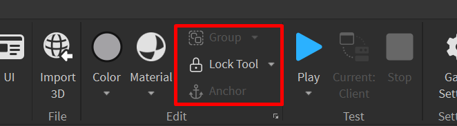После этого заблокируйте Baseplate при помощи инструмента Lock.
Ключевые зоны
При создании уровня важно представлять, как игроки будут перемещаться по локации. Классический уровень для шутера организован таким образом, чтобы команды могли реализовывать различные стратегии на поле боя, не ограничиваясь только одной зоной для игры.
В таком уровне есть центральная часть, в которой происходит самое массовое столкновение между игроками - она называется ареной. Обычно это квадратная, прямоугольная или круглая зона, в которой есть два главных входа для каждой из команд и несколько боковых для захода с фланга.
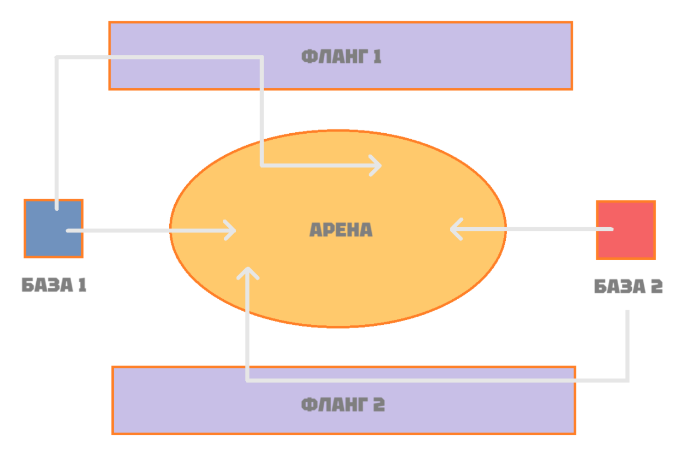Метрики
Создайте куб, который будет обозначать здание и разместить его на уровне. Запустите игру и посмотрите на масштабы этого куба внутри игры. Скорее всего, он будет либо слишком большим, либо слишком маленьким для адекватного восприятия в игровом пространстве.
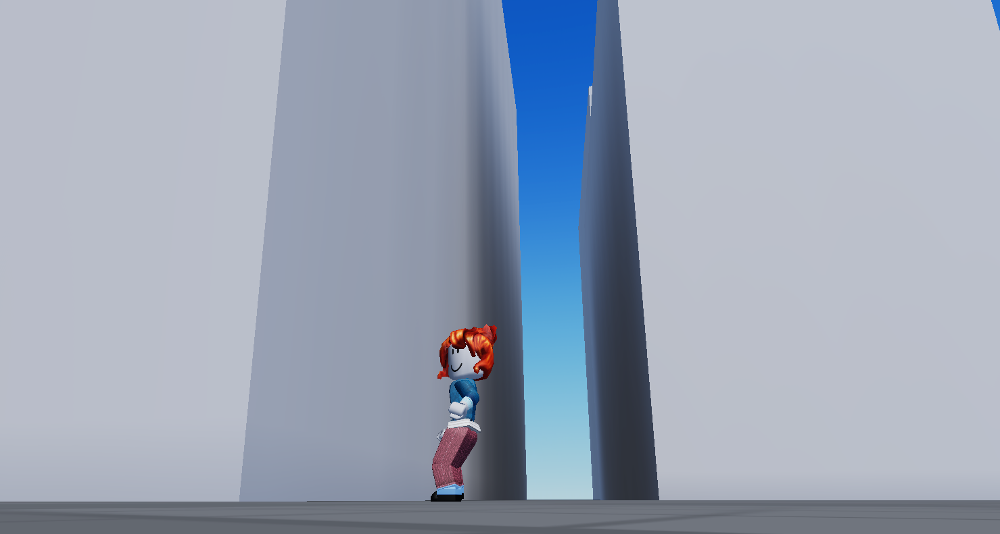Это связано с тем, что в процессе проектирования уровня сложно воспринимать масштаб, не имея объектов для сравнения. Чтобы избежать этой ошибки левел-дизайнеры пользуются системой метрик.
Метрика - это система отношения внутриигровых размеров объектов окружения с размером игрока. Всё окружение должно соотноситься в правильных пропорциях с персонажем и паттернами его передвижения. Это особенно заметно в играх, в которых игрок часто прыгает, карабкается, крадётся и т.д. В таких играх важно, чтобы окружение было соразмерно игроку.
Во время разработки уровня для шутера важно помнить, что игроки должны быстро перемещаться между зонами и стараться не находиться на открытый местности слишком долго. Поэтому важно избегать больших дистанций между укрытиями, чтобы иметь возможность быстро переместиться с фланга на арену и обратно. Таким образом уровень должен быть спроектирован так, чтобы игроки могли быстро перемещаться между безопасными зонами, укрываясь от огня противника.
Чтобы достичь этого эффекта, важно соотносить дистанции и размеры объектов с размером игрока. Для этого создайте риг игрового персонажа и разместите его на сцене.
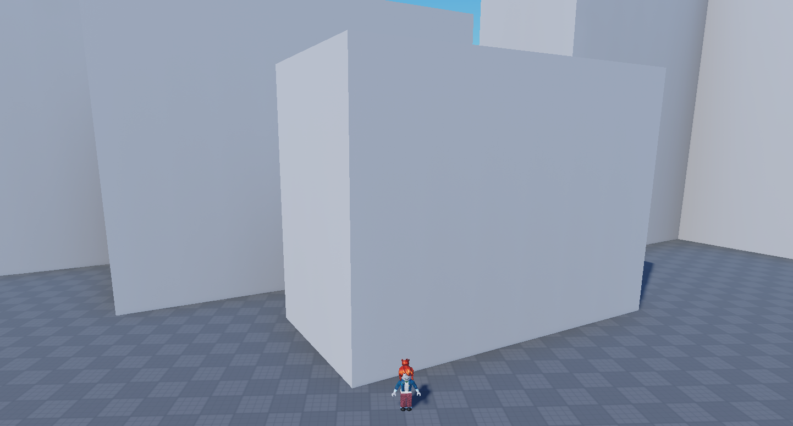Благодаря этому вам будет намного проще ориентироваться в масштабах дистанции. Удалите созданные здания - они были необходимы только для примера.
Проектирование арены
Начнём с проектирования центральной локации уровня. Чтобы лучше понимать область работы, можно создать обозначение для ключевых зон.
Создайте цилиндр, увеличьте его диаметр и разместите в центре уровня - это область арены, в которой будут проходить самые массовые стычки. Также добавьте два прямоугольных фланга по бокам.
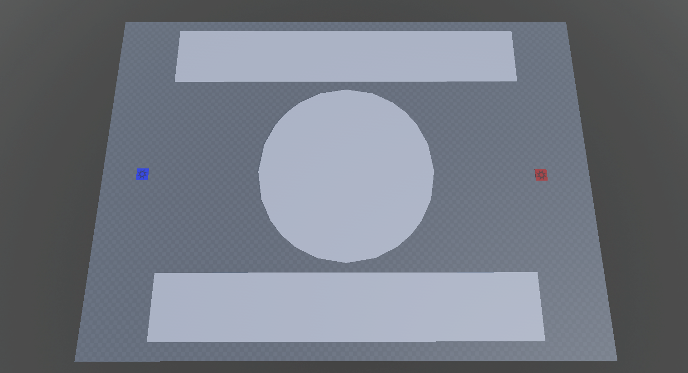Теперь, понимая масштабы, можно приступать к проектированию. Создайте куб, увеличьте его так, чтобы он был обозначал здание (пользуйтесь сравнением с персонажем) и расположите его на одной из границ арены. Запустите игру, проверьте масштабы здания и при необходимости отредактируйте его.
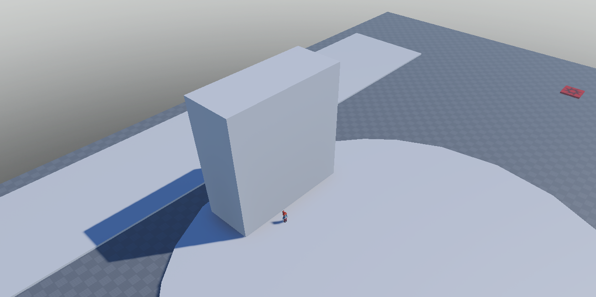Дублируя и изменяя это здание, добавьте дополнительные строения, ограничивающие арену от флангов и баз противников.
Для получения более интересных ритмических форм, смешайте эти здания так, чтобы они не выстраивались в одну сплошную линию - это добавит дополнительной сложности окружению, а также создаст зоны для укрытия. Сочетайте формы зданий, создавая не только «коробки».

Для упрощения задачи можно создать несколько типовых конструкций и использовать их.
В процессе работы помните, что в арену должны быть организованы проходы с флангов, а также с базы одной команды не должно быть видно базу другой. Сделайте главный вход в локацию сбоку, создавая безопасную зону на базе команды.
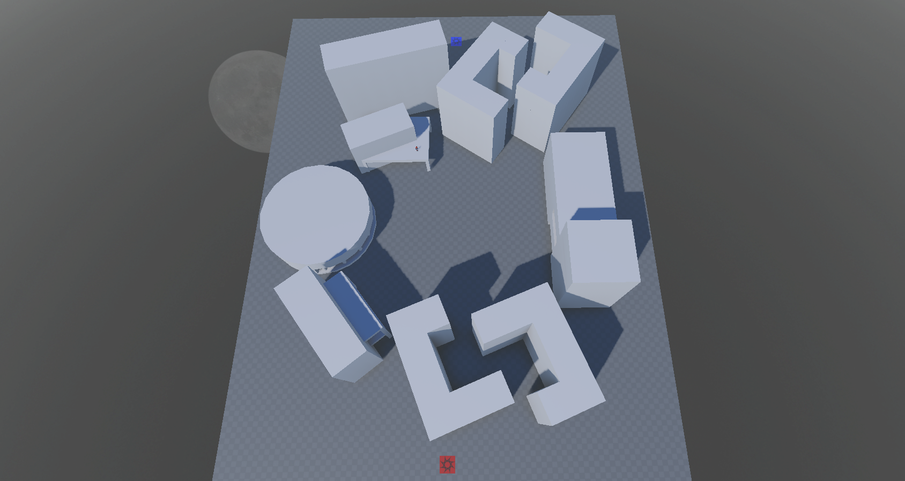Перепады высот
Ещё одна важная часть работы с дизайном уровня - работа с высотой. Плоский уровень не дает ощущения сложности окружения. Если игрок перемещается только по одной высоте, он не ощущает полноценного изменения локации.
Также работа с разной высотой в уровне позволяет добавлять преимущества игрокам, занявшим более высокую точку. С такой позиции удобнее осматривать местность, обороняться и стрелять по игрокам, находящимся ниже.
Дополнительным эффектом перепада высот является более простое запоминание маршрутов в игре. Плоские части запоминаются хуже, чем спуски и подъемы, которые ломают паттерны перемещения игрока и становятся дополнительным ориентиром на местности.
Добавление высоты
Поднимите спаунпоинт одной из команд над землей и добавьте куб, на котором этот спаунпоинт будет располагаться.
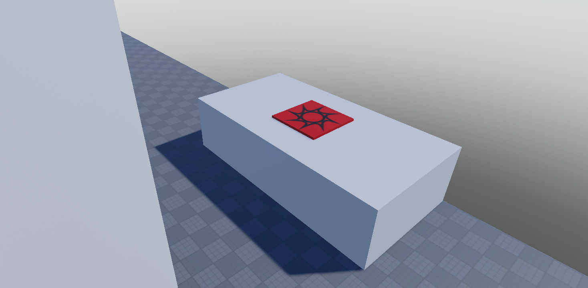База этой команды станет намного более защищенной, чем база первой. С добавлением такого преимущества, карта превращается в сценарий «атака - оборона»: команда сверху обороняется от команды, нападающий снизу.
Добавьте спуск с базы в сторону арены, используя block или wedge. В случае, если база поднята достаточно высоко, используйте 2 детали wedge, делая каскадный спуск.
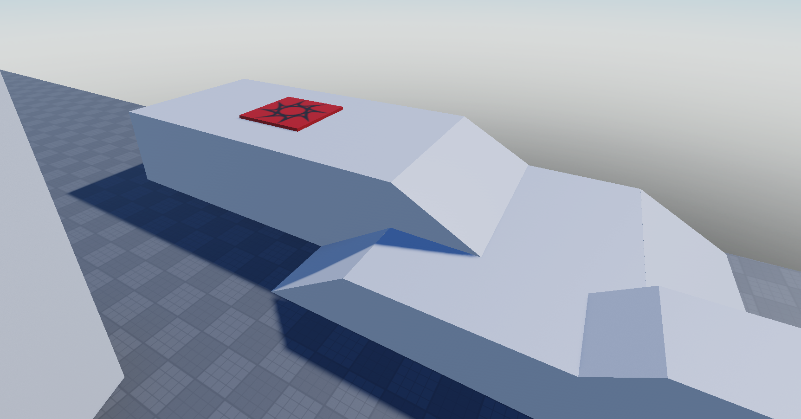Так как база находится выше основной зоны игры, убедитесь, что её нельзя будет прострелить с арены. Добавьте дополнительные укрытия при необходимости.
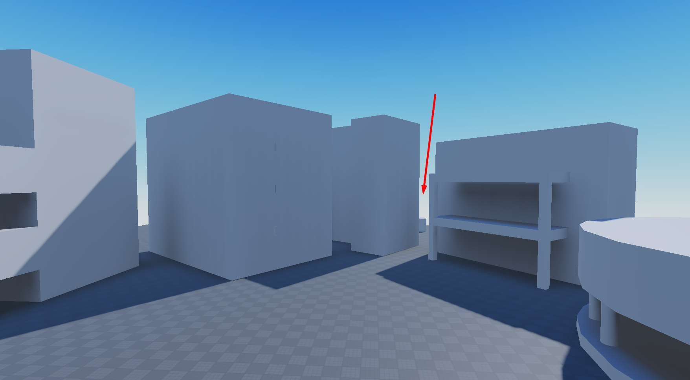Оформите базу так, чтобы она вписывалась в общий вид карты.
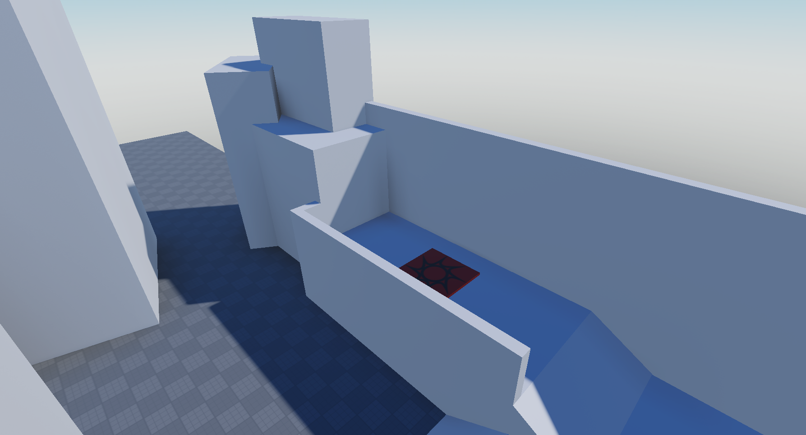Работа с флангами
Фланги - это области, по которым должны перемещаться игроки, которые будут заходить в тыл команды противника, заставая её врасплох. Фланг - одна из ключевых деталей хорошей карты, которая позволяет при правильной стратегии перевернуть игру.
В нынешнем виде карты фланг представляет из себя прямой проход к базе противника. Это самый простой вид флангов и технически он не верен. Мы используем именно такой вид флангов чтобы понять их концепцию в рамках одного занятия.
Правильный фланг представляет из себя обходной путь с различными ответвлениями и множеством поворотов, что делает перемещение по ним более опасным и непредсказуемым. Доработаем один из флангов.
Сейчас игрок, находящийся на одной стороне фланга, видит всю область до базы противника, что делает фланг бесполезным. Добавьте дополнительные объекты, закрывающие обзор игрокам, а также усложняющие их перемещения. Для этого можно добавить здания, находящиеся под углом, заборы, препятствия и т.д.
Также добавьте проходы к арене из этого фланга для обеих команд. Это могут быть небольшие переулки между зданиями, ведущие к главной области.
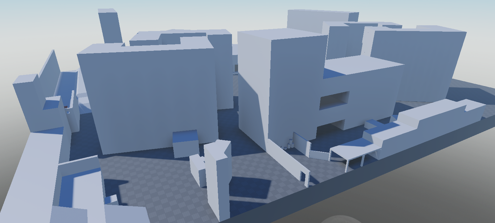Запустите игру и побегайте по этой части уровня. Важно убедиться, что фланг не будет простреливаться с дальней дистанции. Для этого добавляйте изменение направления улицы и объекты, закрывающие обзор.
Подумайте, как игроки базы на возвышенности будут спускаться в этот фланг и подниматься обратно. Для этого можно добавить лестницу - прямоугольные детали, находящиеся друг от друга на небольшой высоте. Также можно использовать wedge или ставить дополнительные объекты, по которым можно пропрыгать и забраться наверх.
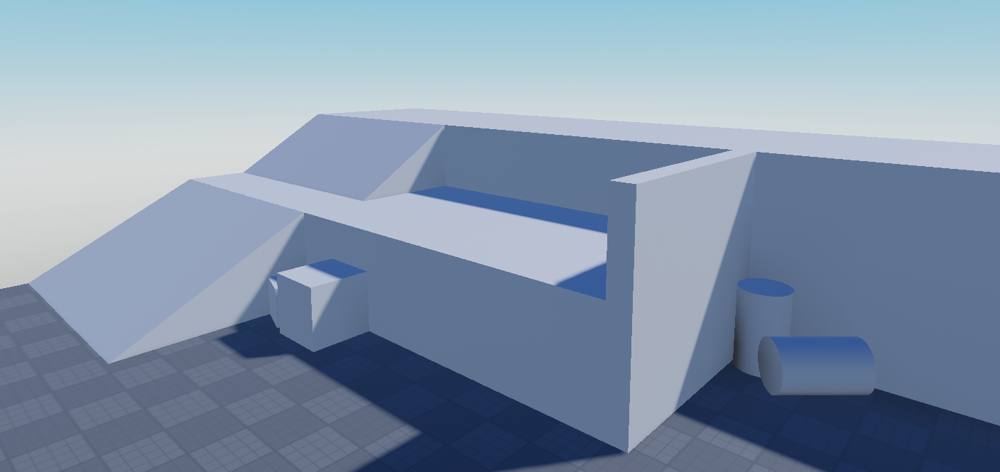Дополнительные объекты
После оформления основных форм арены и одного из флангов, добавьте дополнительные объекты, помогающие командам в игре.
В первую очередь добавьте укрытия, за которыми игроки будут прятаться во время перестрелок. Эти укрытия должны быть удобными для команды, на стороне которой они находятся, поэтому располагайте их под углом, направленным к центру арены.
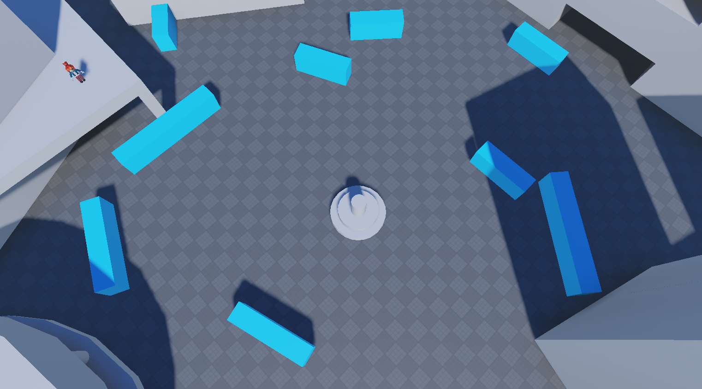Добавьте снайперские позиции. Предусмотрите, что кто-то из игроков захочет играть на дальней дистанции, обстреливая команду противника с возвышенности. Добавьте лестницу одному из зданий и дополнительные барьеры на крышу, чтобы защитить снайпера:
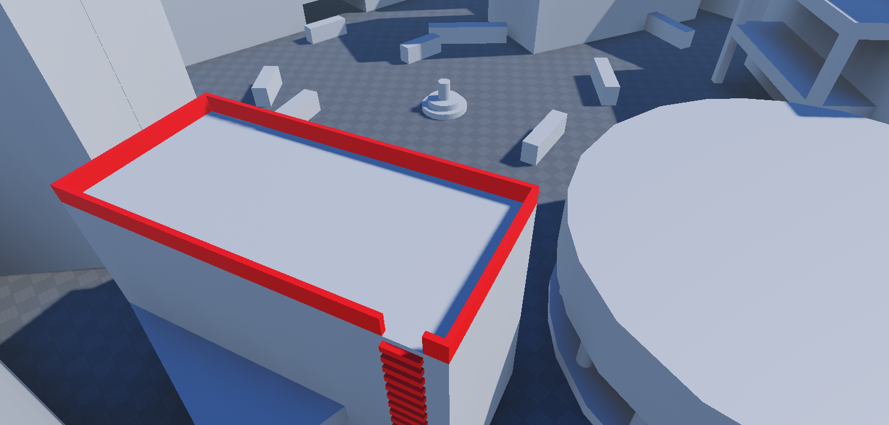Добавьте более сложные элементы окружения. Проходы между зданиями могут быть не только переулками, но и закрытыми арками. Такие проходы защищают игроков от выстрелов сверху, при этом ограничивают их обзор, создавая более узкую часть уровня. Такие места добавляют динамики движения:
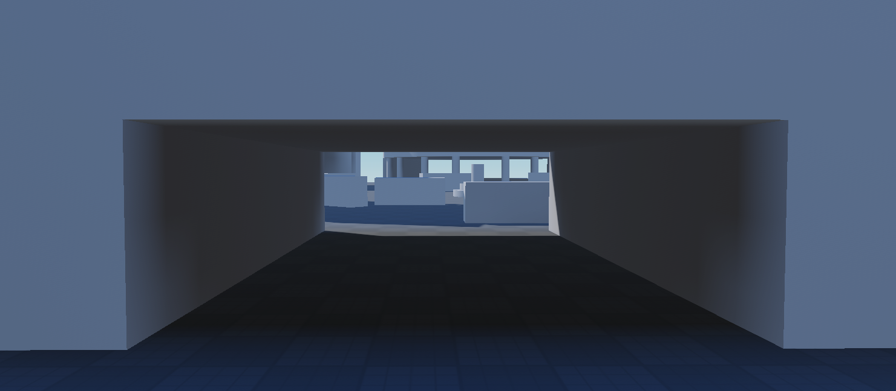Также можно добавить дополнительно объекты, например, фонтан в центр арены, заборы и ограждения, переходы между крышами, разрушенные здания и т.д.
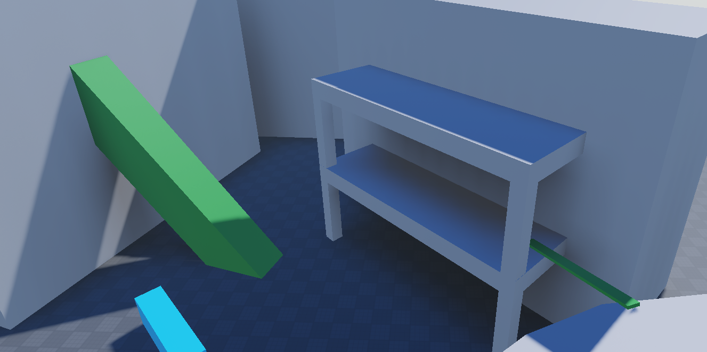Домашкаа 😁
В домашнем задании нужно доработать созданный на уроке уровень, проработав второй спаун и второй фланг, добавив дополнительные сложные объекты. Не забудьте сохранить файл на компьютер :)
Дополнительно можно поиграть в шутеры Roblox для того, чтобы посмотреть, какие приемы используют левел-дизайнеры в существующих играх, и применить их в своей.